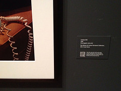

Digital Best Practices for Museums & Other Institutions
on
I just got back from a quick trip to New York and visited a number of impressive museums. Not surprisingly, one of the most amazing was the Museum of Modern Art (MoMA), in which I was fortunate enough to spend a whole day. One of the exhibits used QR Codes and walking around the museum I really got to thinking about the Virtual/Physical opportunities that modern museums can now take advantage of. The MoMA did lots of stuff right, but it's clear that they are still trying to figure out how to integrate online content in their physical exhibits. With the prevalence of smart phones and other mobile devices, it's important to think about how to give the visitor the best experience possible.
- I had no idea before entering the museum that the MoMA that there were so many mobile services available. I never took the time to download the iPhone App, and it would have been really interesting to have explored the museum with that application. It hadn't occurred to me to look before hand and download an App before going to the museum, and I probably download Smartphone Apps more than most users. Would be great if all museums were more proactive to get folks to both download the Apps before hand and remind people to bring their ear buds.
- As I watched a security guard try to explain to an older visitor how to use the QR Code with his new iPhone, it occurred to me how simple it would be to simply have some information presenting the basics. Even listing a couple of popular apps that have been used and are known to work well with the particular variant used could be useful. How many times are gallery staff asked to do things like this?
- I know how to use QR Codes and am fascinated in seeing how they are being slowly used. There is so much potential to offer so much more information to users by simply pointing people to a web page. If a piece of work has made it to a national gallery or museum there will no doubt be pages of information, critiques and background about it. QR Codes are a great way to do that, but should not be seen as the only way to give people access to this information. Most people still do not recognize what QR Codes are and aren't in the habit of using them.
- Printing Short URLs are another way to give people quick access to a page that they can browse or even write down quickly using paper/pencil and jump to the online reference. QR Codes are great if you are right there, but aren't as flexible as simple printed text some of the time. Furthermore, generating a QR Code based on a Short URL would allow you to print a less detailed image. I've got a new iPhone, but couldn't read some of the QR Codes because there was so much information being passed that it required 4 boxes where one should have been sufficient. If MoMA was using Drupal like the Field Museum there would be some easy ways to build short URLs for all of your pages as well as QR Codes.
- Having a Short URL printed along with each exhibit (along with a QR Code) could help bring people to the web page that introduces the collection. Every resource made available from a QR Code should also be available through the website.
- Many museums now have a Twitter account and reminding visitors about it will allow them to more easily let you know what they think about their experience. Claiming a Twitter hashtag for the experience will make it easy for people who are excited about an exhibit to communicate about it.
- I could read some of text of the photo as you can see in the full version of the photo used with this blog post, but there's no way that you could make any sense of the QR Code. Never the less, I could want to watch the video associated with Untitled #90 at some point when I am not in the the museum and there's really no reason to restrict it to people who are watching it in the museum.
- Although it's common to see QR Codes with no information about what it is providing, I think that is bad form for a museum. A QR Code should state if it is a video, audio, or text description. This could be as simple as adding a color, images or logo to a generated QR Code to let folks know what information it provides.
- There is no reason why a museum couldn't provide QR Codes for Wikipedia articles about a general topic, artist or time period. There are probably better resources for most elements in the museum, but for introductions to movements or context for a work of art, it might be an excellent companion piece.
- The Short URLs used should permanent references, but there are times that it might make sense to change these to point to a better reference. In many cases, a short QR Code and description could be easily printed out and simply pasted over an old one if the information changes. There are ways to design the display so that this can still look classy, but it should be expected that the information may need to be updated over time.
- It is useful to provide more seating so that people can be comfortably learning more about the exhibit while not necessarily standing in front of it. It would probably provide a better traffic flow to actually encourage folks to move to a seating area while learning more about a piece of art.
- With so many people carrying around cameras and microphones with them in their smart phones and mobile devices it is important to have regular reminders about the etiquette to use them in the museum and in each exhibit. Where are recordings allowed is one that needs to be clearly stated, particularly in exhibits where QR Codes are being used (as these use cameras after all). I would also like to have policies about the use of iPads, large tablets and laptops for taking photos as they are big enough that it can actually get in the way of other users experience.
- Many museums have made efforts to make their exhibits more accessible by adding braille signs. This is great, but not all blind users can read braille. Someone with low vision could learn pretty easily to find a QR Code and have their smart phone read them read descriptive text about the exhibit.
- The audio guides generally made available by museums are still going to be useful for years to come, but I do think that a much richer experience is available by leveraging the devices that people are already bringing to the museum. Unlike the audio equipment, there is no worry about someone walking away with a device which is owned by the museum.
It was interesting to contrast the MoMA with the museum on Ellis Island. The Ellis Island Museum was a great tribute to the waves of immigration to the United States, but there were so many loose threads that could have easily been followed up on if there had simply been free wireless provided in the building. Being able to look up some of the terms or communities of immigrants would have been very useful to have given more context. It also would have allowed me to more easily ask questions to my own family if I wanted to know more about my genealogy. The other things mentioned above would just be great perks to allow me and others to learn more about the experience.
I do think that many of these ideas could be implemented for a variety of museums with a fraction of the budget that it would take to set up an app for a smart phone. Much of it comes down to thinking about more tightly integrating the content of the website to the content of the museum. I had a great time in NY will definitely look up beforehand to check if a museum is doing anything to support the mobile experience.
This is the Short URL I've generated for this page using Google's URL Shortener - https://goo.gl/oWPxQg - I then made a QR Code of that on the right.
Share this article


About The Author

Mike Gifford is the founder of OpenConcept Consulting Inc, which he started in 1999. Since then, he has been particularly active in developing and extending open source content management systems to allow people to get closer to their content. Before starting OpenConcept, Mike had worked for a number of national NGOs including Oxfam Canada and Friends of the Earth.